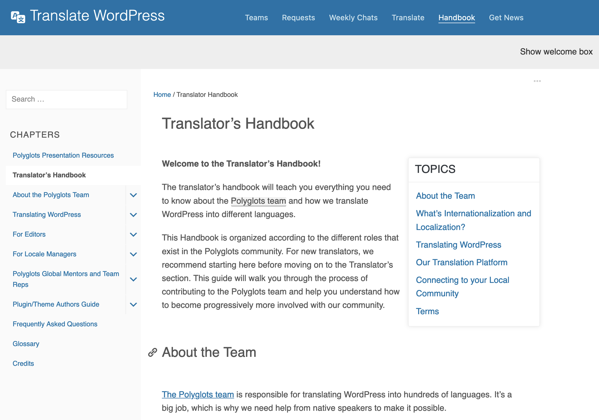
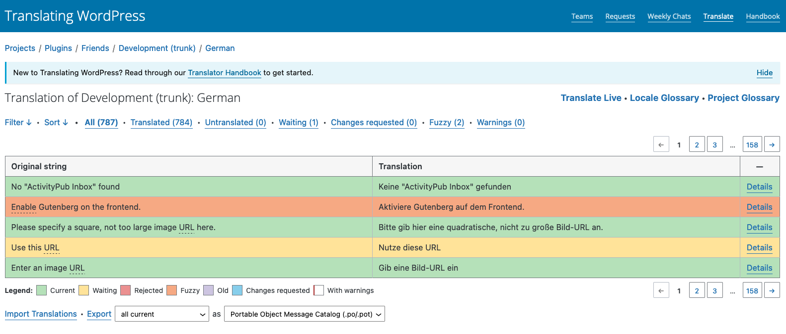
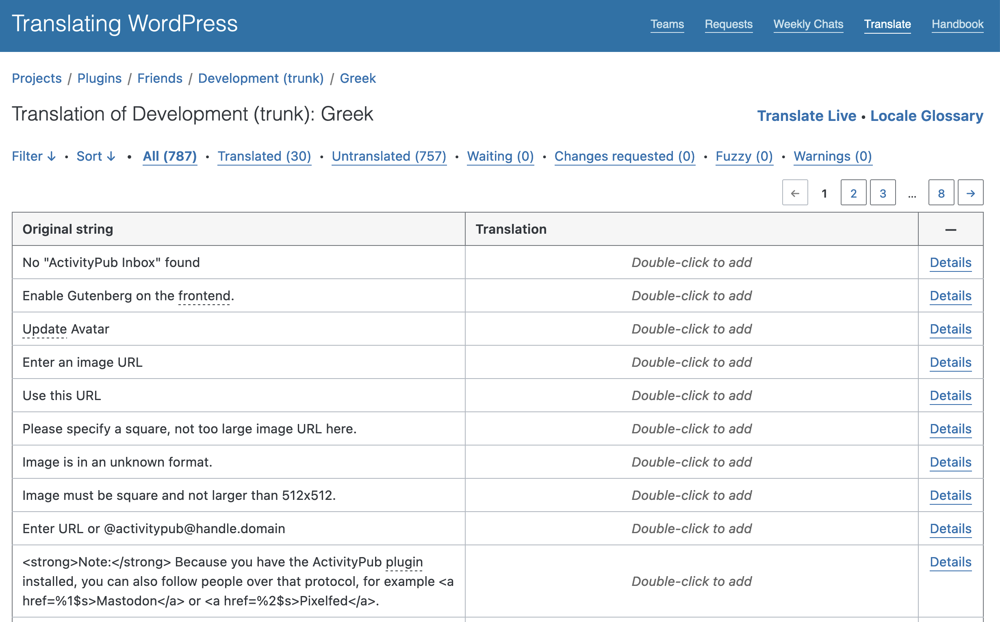
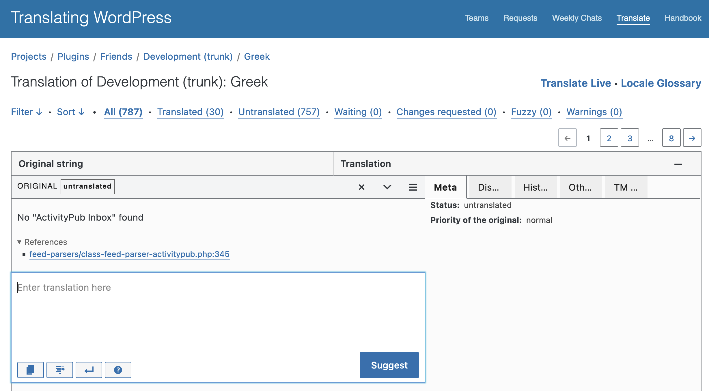
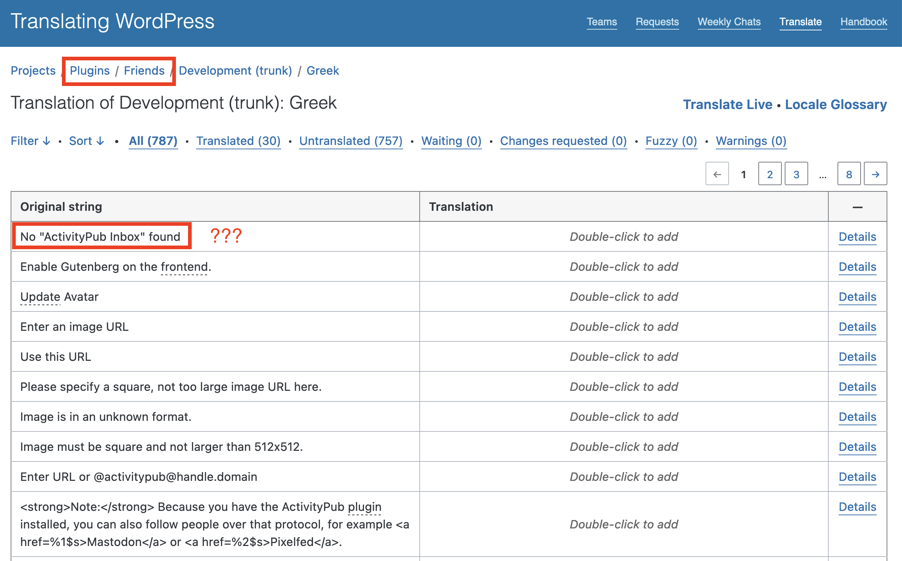
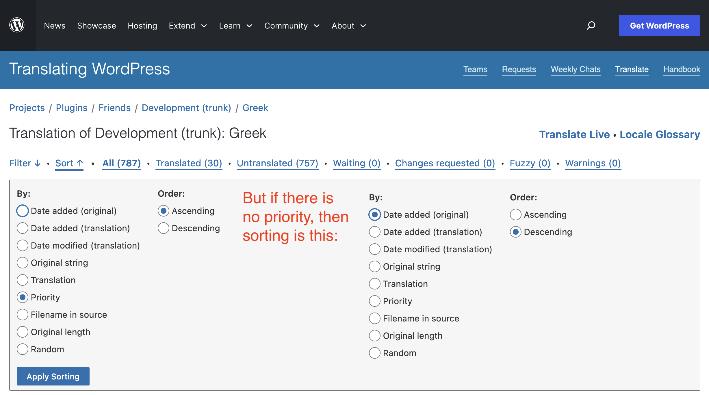
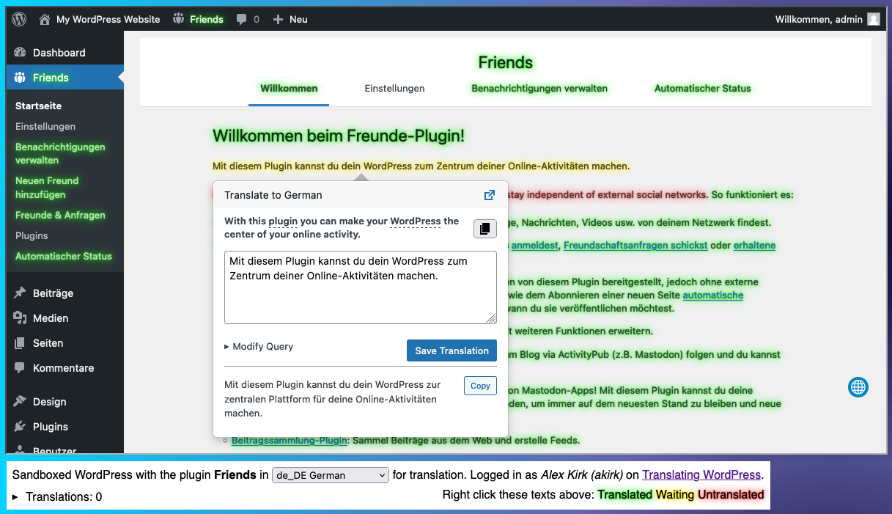
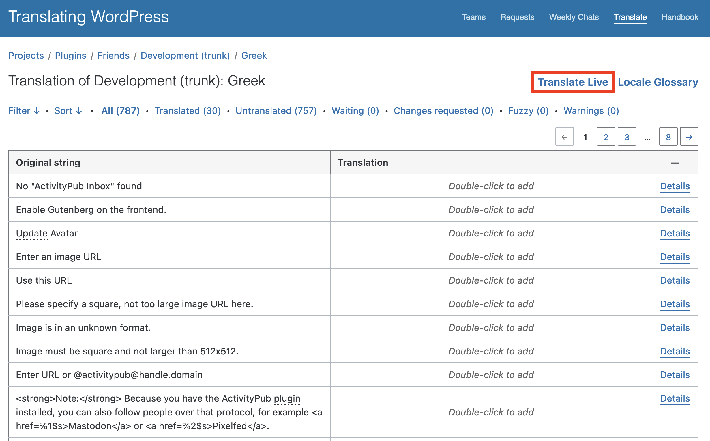
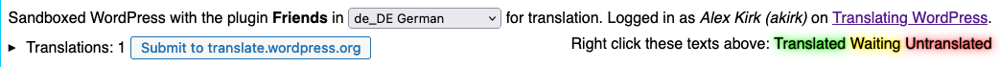

Community Team Training #11
Using Translate Live

Translating WordPress
- Contribute translations from English to a language you speak
- WordPress Core, plugins, and themes
- For many the first step into contributing to WordPress
- Happens at translate.wordpress.org
- Introduction with the Polyglots: Translator's Handbook
Polyglots Handbook
 https://make.wordpress.org/polyglots/handbook/Typical Translation Environment
 https://translate.wordpress.org/projects/wp-plugins/friends/dev/de/defaultTypical Translation Environment
 https://translate.wordpress.org/projects/wp-plugins/friends/dev/el/defaultEnter a translation
What am I translating?

Which English Strings are displayed first?
Typical Translation Environment
- Often starting to translate "somewhere in the middle"
- Missing Context: is this a headline or a button?
- But: Ecosystem Tools
- Discussion & History
- Placeholders, Warnings & Glossary
- Translations to other languages
- Translation Memory & Machine Translation
- Browser Extensions like GlotDict
Translate Live
- Hands-on Approach
- Built on WordPress Playground
- Runs WordPress+plugin/theme inside your browser
- Provides Inline Translation through Local GlotPress
- Submit to translate.wordpress.org when ready
Translate Live
Translate Live Features
- Visually see the current translation state of a plugin
- Add new translations and modify existing ones
- Try translations without submitting them yet
- Tools
- Placeholders, Warnings & Glossary
- Machine Translation
How to Access Translate Live
Translate Live Demo
Translate Live ... the Good
- It's very quick to get started
- Works without a WordPress.org account
→ you receive a PO file instead of submitting directly - Very visual to see what you are translating
Translate Live ... Is Good For
- Translating a plugin/theme to a new language from scratch
- Reviewing existing translations and improve them on the spot
- See translated items in context
- Work with space constraints
Translate Live ... Good to Know
- Be careful to use the Submit button to save your translations
 - On a 99% translated plugin/theme it's hard to find the missing strings
→ Use the table view for that - Performance depends on your computer and network speed
(~7MB initial download, subsequently cached)
Translate Live ... can be improved
- It can be hit or miss, sometimes English text is not recognized
- Very large plugins can be a bit slow
- Some plugins require a lengthy setup process *
- Plugins that depend on other plugins don't work well *
Translate Live ... How it works
- In PHP, English texts are replaced with their translations
- We log these and transmit them to Javascript
- After the page loaded, we find the strings in the DOM
- Wrap them in a HTML tag so it can be right clicked
- Save the translation in a local GlotPress
- Export them to a PO file and import it to translate.wordpress.org
Summary of Translate Live
- An easy way to get new translation contributors started
- Accessible for all plugins and themes on translate.wordpress.org
Translate Live link on the top right - Local GlotPress with Inline Translation will come in GlotPress 5.0
→ Can be installed on your own WordPress, too
Thank you!
Questions?
Find the slides at
alex.kirk.at/translate-live-nov-2023/
Find me at
On WordPress.org as akirk
On the web at alex.kirk.at
On Matrix as @alex:kirk.at